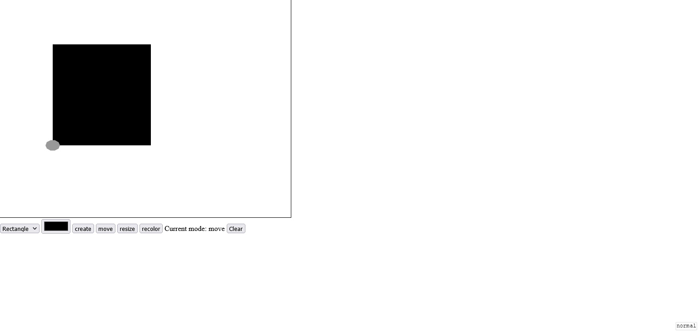

Tutorial Penggunaan Web-Based CAD
Kembali ke CAD
Tampilan utama
 Keterangan:
Keterangan:
- Kanvas tempat menggambar
- Pilihan tool menggambar
- Pilihan warna untuk bentuk yang akan digambar
- Tombol untuk berpindah ke mode menggambar
- Tombol untuk berpindah ke mode geser
- Tombol untuk berpindah ke mode skala objek
- Tombol untuk berpindah ke mode ganti warna objek
- Tombol untuk mengosongkan kanvas
Cara menggambar
-
Garis dan poligon:
- Pilih tool yang bersesuaian pada (2)
- Klik titik awal di kanvas
- Lanjutkan dengan memilih posisi titik-titik selanjutnya
-
Klik ganda untuk memilih titik terakhir dan penyelesaian pemilihan
titik
-
Persegi dan Persegi Panjang
- Pilih tool yang bersesuaian pada (2)
- Klik titik awal di kanvas, lalu tahan
- Geser mouse sehingga ukuran persegi/persegi panjang sesuai
- Lepas klik
Cara menggerakan dan me-resize objek
- Pindah ke mode yang bersesuaian
-
Geser titik kontrol seperti yang terlihat pada gambar:

Cara mewarnai ulang objek
- Pindah ke mode yang bersesuaian
- Pilih warna pada (3)
-
Klik titik kontrol seperti pada saat menggerakkan atau me-resize
objek